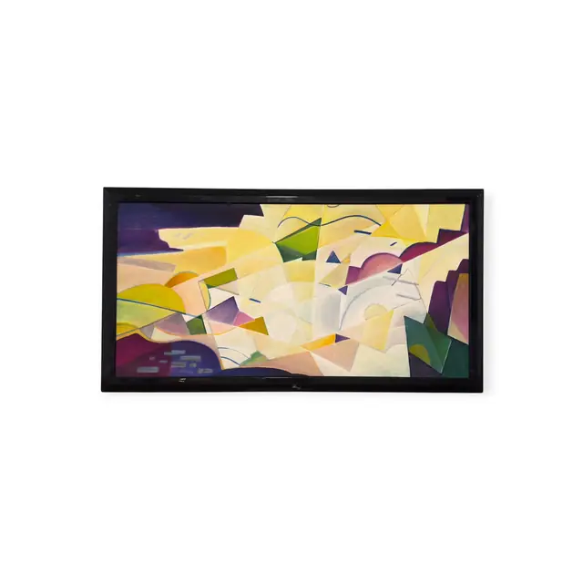
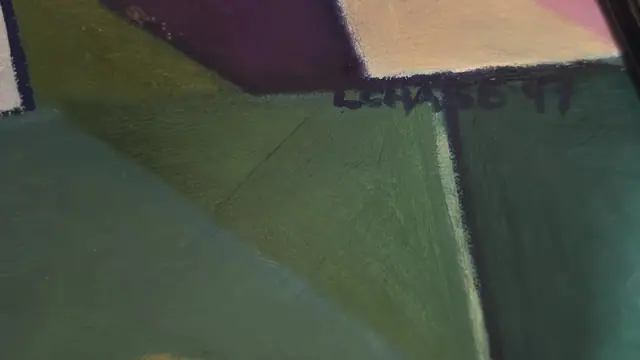

Paintings & Prints
Large Faceted Abstract Landscape 1947, L.HASE, Signed, Framed, 1947
L.HASE · dated 47 - probably 1947
Price Upon Request


About the Item
L.HASE. A panoramic composition split into flat interlocking planes - pale butter yellow, cream and ivory dominate the centre and sky, while wedges of plum, aubergine, teal-green and olive anchor the corners and lower edge. Thin drawn lines in cobalt and violet arc across the facets like contour marks, and a few small pale blue rectangles float at the lower left. The paint is matt and evenly brushed with soft directional strokes and no impasto, so the picture reads as a designed, almost architectural surface. The mood is bright, cool and mid-century modern. Medium: oil on canvas. Signed right of centre within the composition, in dark blue-black, reading "L.HASE 47". Inscribed on the reverse or mount: L.HASE 47. Condition: Paint film appears stable and matt with no craquelure visible. The black frame has a few small scuffs along the lower edge.
Details
- Creator:
- L.HASE
- Creation Year:
- dated 47 - probably 1947
- Dimensions:
- Height: 28.0 in (71.12 cm)
Width: 51.5 in (130.81 cm)
outside of frame - Medium:
- oil on canvas
- Period:
- 20Th
- Condition:
- Offered in the condition shown in the photographs.
- Reference Number:
- VO-95
- Documentation:
- no certificate photographed
- Gallery Location:
- L.HASE 47